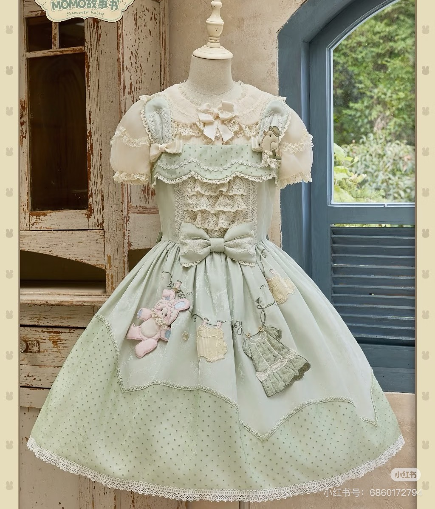
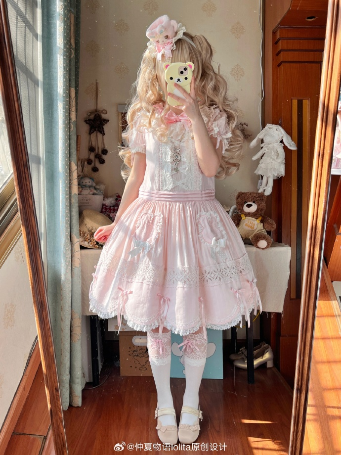
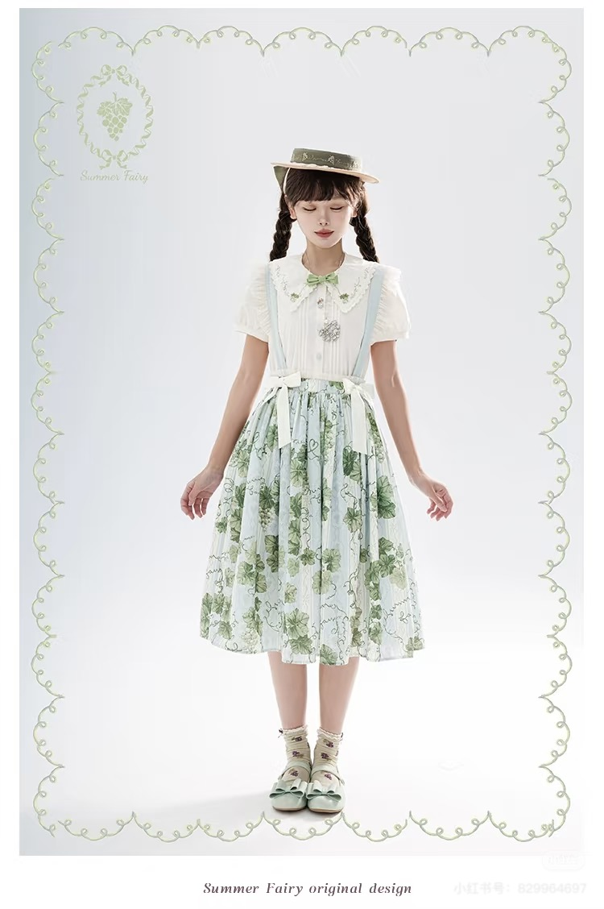

Lolita 是一种起源于日本、深受维多利亚与洛可可时期影响的时尚文化。它通过精致的剪裁、蓬松的裙型、蕾丝、丝带和主题图案，构建出洋娃娃般浪漫的服饰美学。 与动漫角色扮演不同，Lolita 是一种**独立的时尚体系**，强调优雅、繁复和可爱。

特点： 背心式吊带裙，需要搭配 blouse（衬衫）。
优点： 可搭配风格变化多，四季通用性强。

特点： 连衣裙类型，自带袖子与上身结构。
优点： 穿着方便，可直接出门。

特点： 半身裙，需要搭配 blouse 或 cutsew。
优点： 舒适、日常化，适合轻 Lolita 风格。
1. 衬裙（Petticoat）： 决定裙型蓬度的关键，是 Lolita 的灵魂。
2. 主裙（JSK / OP / SK）： 整体造型的主题部分。
3. Blouse（衬衫）： 与 JSK、SK 搭配，蕾丝与领型能明显影响风格。
4. 袜裤： 多使用过膝袜、主题印花袜等。
5. 鞋子： 圆头鞋、玛丽珍鞋、蝴蝶结鞋为常见款式。
6. 头饰（Headbow / Bonnet）： 用于平衡视觉，是搭配的重要组成。
7. 包包与配件： 如爱心包、主题手链、项链等。
Sweet Lolita
粉色、蓝色、奶白等糖果色系，主题包含甜点、玩偶、星空。
Classic Lolita
更古典、优雅，常见棕色、酒红、深绿，元素多为花卉。
Gothic Lolita
黑白色系为主，搭配蕾丝、十字架、哥特图案。